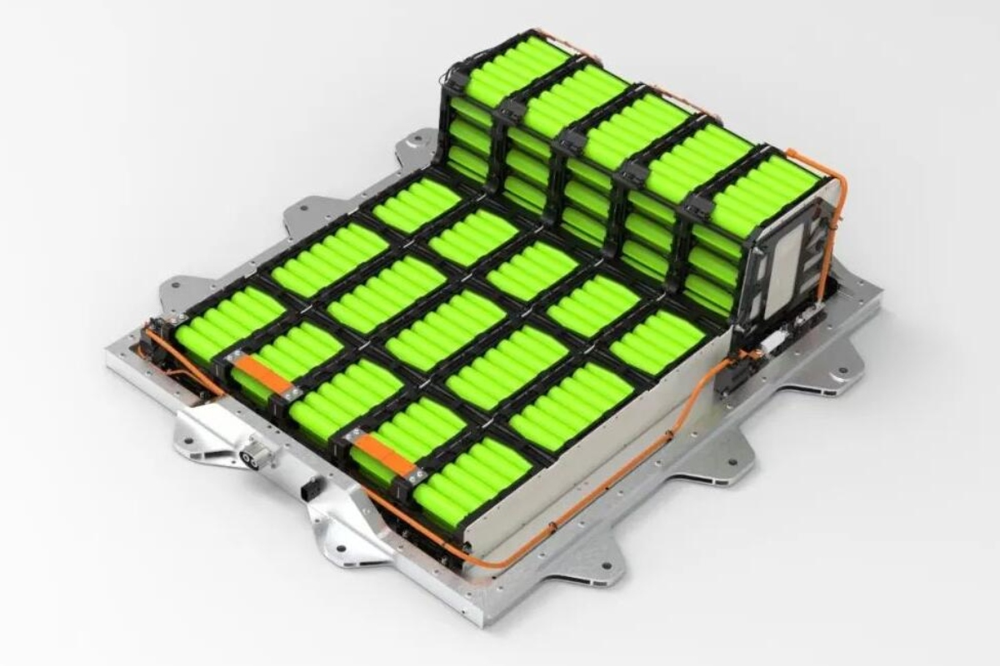

The Sodium-Ion Revolution: Breaking the Lithium Monopoly

The industrial world has reached a tipping point in the first quarter of 2026. After a volatile 2025, lithium prices have staged a dramatic 84% year-over-year rebound, stabilizing near $24,000 per metric ton. While this recovery has saved many hard-rock mining operations from bankruptcy, it has simultaneously reignited the desperate search for cheaper alternatives in the mass-market Electric Vehicle (EV) and Energy Storage System (ESS) sectors. Enter the "Salt Age": Sodium-ion technology is no longer a laboratory curiosity, but a commercial necessity.
China currently maintains a stranglehold on this sector. Giants like CATL and BYD have recently certified their second-generation sodium cells under the new GB 38031-2025 safety standards, promising 80% charge in just 15 minutes. However, the West is finally mounting a defense. This month, the European Commission greenlit a €200 million subsidy program in Spain (under the PERTE framework) specifically aimed at building production capacity for alternative battery chemistries. The goal is clear: utilize Spain’s abundant solar energy and salt resources to create a European "Sodium Valley."
Technically, sodium-ion batteries still lag behind lithium in energy density, but they excel in thermal stability and cold-weather performance—maintaining over 92% discharge efficiency at -20°C. For stationary grid storage, where weight is secondary to cost, sodium is already winning the race. As of March 2026, the cost per kilowatt-hour for sodium-ion cells is projected to fall 40% below LFP (Lithium Iron Phosphate) equivalents by the end of the year, driven by economies of scale and the sheer abundance of common salt.
INVESTMENT VERDICT
The "Lithium-or-Nothing" era is over. GCI analysts recommend rotating industrial portfolios toward European and North American firms specializing in sodium-ion electrolytes and Spanish infrastructure projects. While China holds the patents today, the European Union's aggressive subsidies suggest that the 2026-2030 cycle will be defined by a regionalized "Battle of the Chemistries" to secure energy sovereignty.